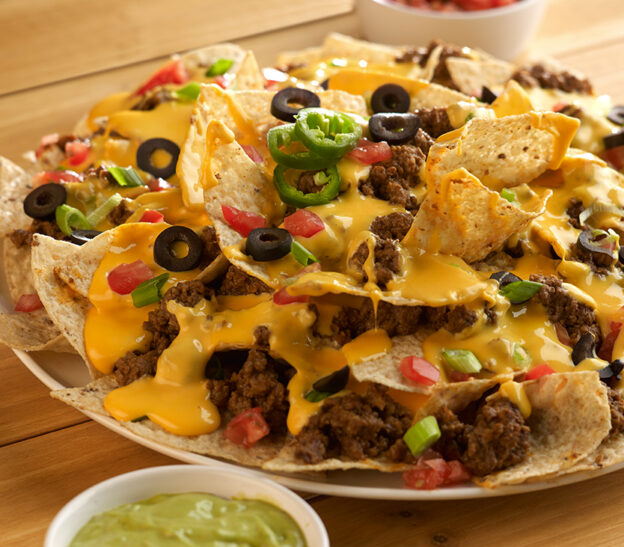

Nachos

Cover corn tortilla chips with shredded cheddar cheese and put it in the oven to melt the cheese.
- corn chips
- 2 C shredded sharp cheddar cheese
- 2 C diced olives
- 1/2 C Jalepenos
- 1 C Pico de Gallo
- Pre-heat oven to 275F.
- Put corn chips on an oven-safe plate.
- Cover corn chips with 1 and 1/2 cups of shredded cheese spread evenly over chips.
- Put chips and cheese in oven for 10 minutes.
- Spread rest of cheese, jalepenos, olives and pico de gallo on the chips.
- (Optional) Add cilantro and sour cream to garnish.